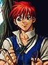
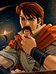
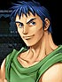
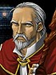
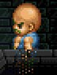
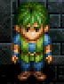
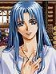
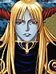

目次 > ゲームについて > 日本Falcom 攻略 > Ys > キャラクター一覧 > その他
らんの眼
Ys(イース) Ys Eternal(VE)/Ys Complete
| 概要 | 情報 | ボス戦 |
| 敵キャラ一覧 | アイテム一覧 | 攻略チャート |
| 地図 | ダウンロード | イースの本 |
| 経験値表 | 地名一覧 | タイムアタック |
| ETERNAL / Complete 比較 | キャラクター一覧 | |
| Ys 攻略へ | 目次へ戻る |
| [ バルバド ] [ ミネア ] [ ゼピック ] [ その他 ] |
| 名前 (Complete) |
名前 (ETERNAL) |
画像 | 備考 |
| アドル＝クリスティン | アドル＝クリスティン |  | 我らが主人公のアドル君。 澄んだ黒い瞳と、燃えるような赤い髪、そしてとどまることを知らぬ好奇心を持つ青年。 生まれて初めての本格的な冒険で、しかも17 歳という若さながら、凶悪な魔物が数多く徘徊し、強力なトラップが数多く仕掛けられたダームの塔を、単身で、しかもわずか一日で登り切った。 非常に無口。上下赤一色の派手な服を着ている。 |
| 盗賊ゴーバン | 盗賊ゴーバン |  | 本名、ゴーバン＝トバ。 ゼピック村にいるジェバの息子で、サラ＝トバとはいとこの関係。彼女が殺されたとき、本当に機嫌が悪かった。 魔物が現れてからは、部下とダームの塔の魔物を一掃しようとしたり、ゼピック村の象徴のである「銀の鈴」には決して手を付けなかったりと、ただの盗賊とは思えない一面がある。 |
| ドギ | ドギ |  | エステリアの外(フェルガナ地方)から来、盗賊ゴーバンの右腕と言われた。 「壁壊しのドギ」とも呼ばれ、その腕っ節は折り紙付き。その名前の通り、初めてアドルの前に現れたときも、「壁壊し」を披露した。 |
| ラーバ | ラーバ |  | 学者の間でも”ただの噂”と言われていた古代王国イースについて調査するためにエステリアにやってきた考古学者。 たまたま助けたドギと一緒に、魔物の徘徊するダームの塔を調査していた。 |
| 盗賊モーガン | 太った盗賊 |  | 盗賊の砦にいる盗賊の一人。 |
| 盗賊ルーガン | やせた盗賊 |  | 盗賊の砦にいる盗賊の一人。 サラ＝トバには以前、よく世話になっていたらしい。 |
| フィーナ | フィーナ |  | サルモン神殿に囚われていた美しい女性。 自分の名前以外の記憶が無く、自分が以前何をしていたのか全く覚えていないらしい。 神殿から救出してくれたアドルに好意を抱いている。 |
| ダルク＝ファクト | ダルク＝ファクト |  | かつて女神に仕えていた六神官の一人、ファクト家の末裔。 彼の両親は信仰心の厚い人物で、鉱山の開発に反対していたが、ある日暴徒化した人々に殺されてしまった。 その日以来、ダルク＝ファクトは人々の前から姿を消したのだが、なぜ彼が悪の道に手を染めたかは、Ys I、II を通しても明らかにされなかった。 |
| 名前 (Complete) |
名前 (ETERNAL) |
画像 | 備考 |
| [ バルバド ] [ ミネア ] [ ゼピック ] [ その他 ] |
| 概要 | 情報 | ボス戦 |
| 敵キャラ一覧 | アイテム一覧 | 攻略チャート |
| 地図 | ダウンロード | イースの本 |
| 経験値表 | 地名一覧 | タイムアタック |
| ETERNAL / Complete 比較 | キャラクター一覧 | |
| ページの上部へ | Ys 攻略へ | 目次へ戻る |